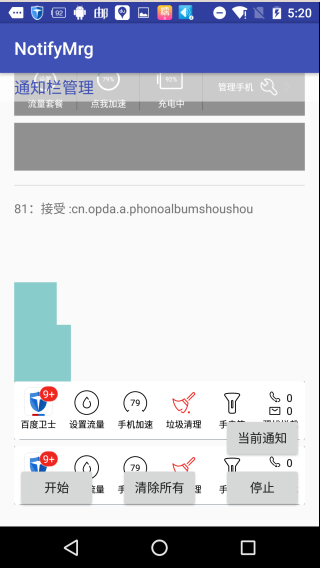
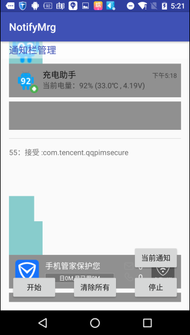

一. 方法概述
android在api 18前可以通过辅助功能’AccessibilityEvent.TYPE_NOTIFICATION_STATE_CHANGED’或是反射活取通知栏相关信息。
现在我们可以根据NotificationListenerService类非常容易的活取通知回调相关信息。
二. NotificationListenerService详解
通知的新增和删除，都会回调你注册的NLS里的方法，这些信息可以通过StatusBarNotification类对象来获取。
另外比较主要的是，系统开启通知读取服务后，系统就会对APP有个保活功能，当被系统或是第三方软件kill后，系统会将你的应用重启。很多厂商会利用这点做一些坏坏的事情。并且国内各大杀毒，清理软件都有开启该功能。
NotificationListenerService主要方法(成员变量)：
删除通知时会回调onNotificationRemoved, 新增通知或是更新时会回调onNotificationPosted
- cancelAllNotifications() ：删除系统中所有 可被清除 的通知；
- cancelNotification(String pkg, String tag, int id) ：删除具体某一个通知；
- getActiveNotifications() ：返回当前系统所有通知到StatusBarNotification[]的列表；
- onNotificationPosted(StatusBarNotification sbn) ：当系统收到新的通知后出发回调；
- onNotificationRemoved(StatusBarNotification sbn) ：当系统通知被删掉后出发回调；
StatusBarNotification类详解
StatusBarNotification，多进程传递对象，所有通知信息都会在这个类中通过Binder传递过来.
内部几个重要的方法如下：
- getId()：返回通知对应的id；
- getNotification()：返回通知对象；
- getPackageName()：返回通知对应的包名；
- getPostTime()：返回通知发起的时间；
- getTag()：返回通知的Tag，如果没有设置返回null；
- isClearable()：返回该通知是否可被清楚，FLAG_ONGOING_EVENT、FLAG_NO_CLEAR；
- isOngoing()：检查该通知的flag是否为FLAG_ONGOING_EVENT；
其中，我们通过getNotification()可以得到Notification对象，Notification是我们比较熟悉的类了，我们可以得到通知具体内容甚至可以还原RemoteViews到我们的本地view上。
三. 使用方法
正确使用NotificationListenerService需要进行三步骤：
1. 新建一个类并继承自NotificationListenerService，override其中重要的两个方法；
1 2 3 4 5 6 7 8 9 10
| public class NLService extends NotificationListenerService { @Override public void onNotificationPosted(StatusBarNotification sbn) { } @Override public void onNotificationRemoved(StatusBarNotification sbn) { } }
|
2. 在AndroidManifest.xml中注册Service并声明相关权限；
1 2 3 4 5 6 7
| <service android:name=".NLService" android:label="@string/service_name" android:permission="android.permission.BIND_NOTIFICATION_LISTENER_SERVICE"> <intent-filter> <action android:name="android.service.notification.NotificationListenerService" /> </intent-filter> </service>
|
3. 开启NotificationMonitor的监听功能；
1 2 3 4 5 6 7
| if (!isEnabled()) { Intent intent = new Intent("android.settings.ACTION_NOTIFICATION_LISTENER_SETTINGS"); startActivity(intent); } else { Toast.makeText(this, "已开启服务权限", Toast.LENGTH_LONG).show(); }
|
1 2 3 4 5 6 7 8 9 10 11 12 13 14 15 16 17 18
| private boolean isEnabled() { String pkgName = getPackageName(); final String flat = Settings.Secure.getString(getContentResolver(), ENABLED_NOTIFICATION_LISTENERS); if (!TextUtils.isEmpty(flat)) { final String[] names = flat.split(":"); for (int i = 0; i < names.length; i++) { final ComponentName cn = ComponentName.unflattenFromString(names[i]); if (cn != null) { if (TextUtils.equals(pkgName, cn.getPackageName())) { return true; } } } } return false; }
|
四. Demo讲解
根据以上步骤，已经可以接收到通知栏变换时的回调，及获取当前所有通知列表，我们限制写个小例子，活取所有通知列表并且监听通知栏的变换，把收到的Notification及相关信息展示到我们的页面ListView中．
1. 按照以上步骤建立基本例子框架
写布局，要有开启服务的btn, 活取所有通知的btn和清除所有列表的btn, 界面比较简陋，如图：

2. 建立BroadcastReceiver和Service交互
当然也可以用binder说是message通信,根据自己程序设计选择,这里为了简单的演示用了BroadcastReceiver机制
1 2 3 4 5 6 7 8 9 10 11 12 13 14 15 16 17 18 19 20 21 22 23 24 25
| class NotificationReceiver extends BroadcastReceiver { @Override public void onReceive(Context context, Intent intent) { String temp = mInfoList.size() + "：" + intent.getStringExtra(EVENT); NTBean bean = new NTBean(); bean.info = temp; Bundle budle = intent.getExtras(); bean.title = budle.getString(Notification.EXTRA_TITLE); bean.text = budle.getString(Notification.EXTRA_TEXT); bean.subText = budle.getString(Notification.EXTRA_SUB_TEXT); bean.largeIcon = budle.getParcelable(Notification.EXTRA_LARGE_ICON); Icon icon = budle.getParcelable(Notification.EXTRA_SMALL_ICON); bean.smallIcon = icon; bean.viewS = budle.getParcelable(VIEW_S); bean.viewL = budle.getParcelable(View_L); mInfoList.add(bean); Log.e("changxing", "receive:" + temp + "\n" + budle); mAdapter.notifyDataSetChanged(); } }
|
3. 活取相关回调展示页面
将回调的相关参数传递到activity中, 展示到listview中,其中可以直接用RemoteViews#apply方法将Notification展示到我们本地ViewGroup中.
程序运行如下:

